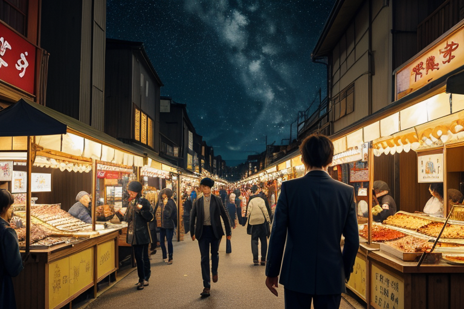
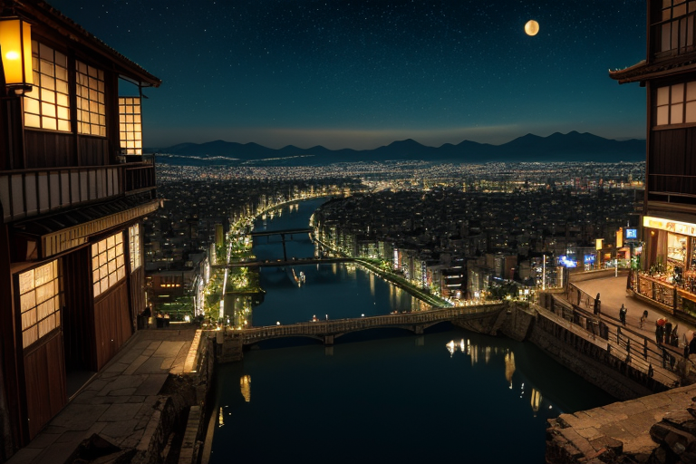
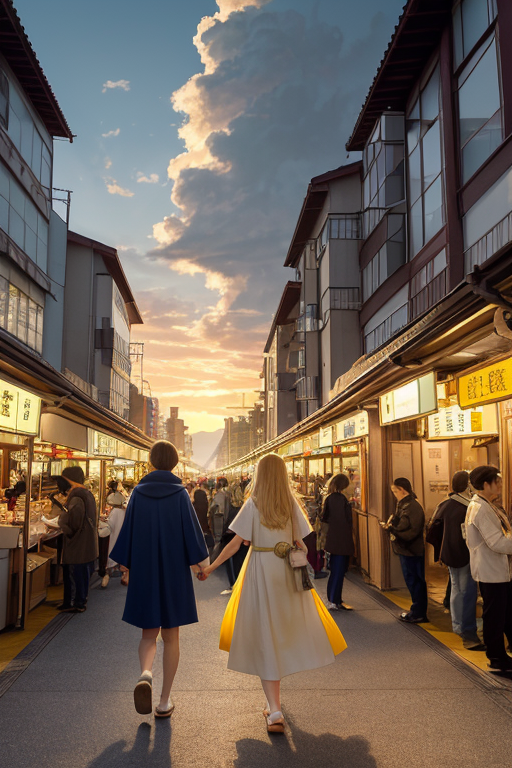

第一章 現実の宮城
あなたはまだ気づいていない。この土地にも、王がいることを。
仙台の七夕飾りが商店街のアーケードを埋め尽くす季節、金糸銀糸が揺れる下を、牛タンの香りと活気ある人声が流れる。駅前の市場では、漁師の威勢のいい声と共に、今日も笹かまぼこが焼かれ、ずんだ餅が次々と包装されていく。港町・石巻の埠頭では、大型船が汽笛を鳴らし、新しい物資と人を運んでくる。商都線の名にふさわしく、人の欲望と金の流れが、この土地の脈動となっている。
その活気の底で、歪みは静かに蓄積されていた。プレートの軋み、かつての大津波が削り取った記憶の断層、復興という名の急ぎの中で生じる心のひずみ。それらは目に見えない波紋となり、この豊かな日常の下を漂う。
群青色のスーツに身を包んだ一人の男性が、その波紋を感じながら、にぎやかな通りを静かに歩いていた。彼の瞳の奥には、灯火のような微かな光が揺れていた。ミヤグリア・ルクス、この地を守る王は、今日もまた、失われたものの重さを背負いながら、この現実の只中に立っていた。
第二章 歪みの兆候
仙台駅前の繁華街は、七夕飾りの煌びやかな色と、牛タン焼きの香ばしい匂いに満ちていた。人々の笑い声、買い物袋の擦れる音、金の流れが街の脈動となっている。しかし、ミヤグリアの耳には、その喧騒の底から、かすかな軋みが聞こえていた。復興需要に支えられた活気の裏側で、急ぎすぎた再建が生む心の隙間。新たなビルが立ち並ぶ石巻の港では、古い町並みの記憶が、無意識のうちに人々の足を重くしていた。
「王様、また、あの感覚が……」ルミエラが彼の肩に止まり、声を潜めた。彼女の灯火の羽が、群青色のスーツの上で微かに震える。目に見えない歪みは、経済の数字や人の流れの僅かな乱れとして現れる。計画されたイベントの参加者が想定より少ない、特定の商店街の客足が、理由もなく疎らになる。それは災害ではない、かすかな「ずれ」だ。
ミヤグリアは目を閉じた。彼の役目は、このずれを正すことではない。増幅もさせない。ただ、その波紋が大きくなりすぎないよう、微かに調整する。震災の記憶が、今の活気を押し潰さないように。復興への焦りが、新たな分断を生まないように。彼は掌をかすかにかざした。街を行き交う人々の足取りが、ほんの少し、軽やかになる。失った後、灯すべきもの。彼はまだ、その答えをこの手に掴めずにいる。

第三章 王の葛藤
仙台城跡の高台から、ミヤグリアは復興の光と影を見下ろしていた。青葉城址の下、新たなビル群が林立し、歓楽街のネオンが川面に揺れる。活気は確かだ。しかし、その欲望の奔流の中に、歪みの種は潜む。急ぎすぎる開発、忘れ去られつつある被災地、金の流れに飲み込まれる人々の心の隙間。彼は、歪みの調整者だ。しかし、この活気そのものが生み出す新たな歪みを、どこまで調整すべきか。
「灯王様、お疲れです」
ルミエラがそっと肩に寄り添う。
「人々は前に進もうとしています。でも、その速さが…」
「速すぎるのではないか、と」
ミヤグリアは呟く。自責の念が胸を締め付ける。あの日、彼は津波を数秒遅らせ、多くの命を救った。しかし、救えなかった命の重さが、今も彼を縛る。守るべきは、物理的な安全だけか。この熱狂と忘却の狭間で、人々が再び失うかもしれないもの――絆や記憶や、ゆっくりと癒える時間――それらもまた、守るべき灯火なのではないか。
彼は掌を翳した。街の喧騒が、ほんの一瞬、遠のく。調整は、抑制ではない。流れを止めることでもない。ただ、この熱さが自らを焼き尽くさないよう、微かな風を送ること。失った後、灯すべきもの。それは、過去への執着でも、未来への盲信でもなく、今この瞬間を、等身大で生きる人々の、揺らめく灯火そのものなのかもしれない。
第四章 妖精との対話
仙台の七夕飾りが、商店街のアーケードを彩る夜。巨大な吹き流しの下、人々の熱気が淀みなく流れている。ルミエラは、王の肩に微かに灯りを宿しながら言った。
「商いとは、交換です。金と物。でも、本当に交換されているのは、もっと別のものだと思います」
彼女の声は、ざわめく人混みをすり抜ける風のようだった。
「震災の後、物資が不足した港町で、お金では買えない交換がありました。持っている人がいない人に分ける。知っている人が知らない人に教える。それは、『不足』という歪みの中で、自然に生まれた灯りでした」
王は黙って聞く。彼は「不足」を数値で調整することしかできなかった。
「今、この賑わいも、その延長にあるのだと思います。牛タンを焼く煙、ずんだ餅を求める列……すべて、『生きたい』という意志の交換。失った後で灯すものは、過去そのものではなく、過去を経た今、ここで交わされるこの意志なのです」
ルミエラの灯りが、王の深い群青の瞳を、優しい金色で照らした。

第五章 微調整と余韻
王は、その意志を微調整する者となった。
彼は仙台駅前の雑踏に溶け込み、群青の瞳で人の流れを見つめる。切符を落とす老人の前に、偶然若者が通りかかる。津波避難訓練の日、曇り空の隙間から一筋の陽光が、迷う子供の足元を照らす。石巻の復興工事現場で、ほんの数秒、強風が止む。それは誰にも気付かれない、些細な偶然の連なりだ。
失ったものは戻らない。彼はそれを、痛みとして知っている。故に、今ここにある「生きたい」という意志の灯りを、ほんの少し、揺るがぬように支える。七夕飾りの短冊が風に翻る中、彼はそっと手をかざす。強すぎる風圧を一段階、弱める。
松島の湾に夕陽が落ちる頃、王は静かに息を吐いた。調整は終わった。今日も、大きな悲劇は起こらなかった。ただ、人々はいつものように、牛タンを囲み、笹かまを焼き、明日を語り合う。その営みそのものが、失った後に灯した、消えない灯火なのだと、彼はようやく理解し始めていた。
あなたの町にも、王がいる。